Select Settings.

After creating a portal page, the page must be configured for the data you want to use on the page.
Users must either be in the Administrators group or have Manage Portal permission in order to edit pages and save changes.
To begin configuring the page:
Select Settings.
The page opens in Settings mode. If this is a new blank page, you will need to configure some basic properties first before adding panels.
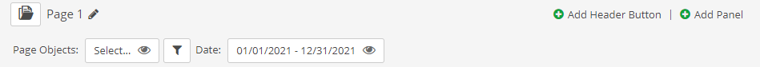
Page Properties
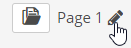
Page Name: Click the editing pencil to edit the page name.
Page Icon: Click the box to the left of the name to choose an optional icon. The icon will be displayed next to the page name in the navigation pane.
The date range for the page may be chosen in two ways: From a dropdown list of calendar periods, or as custom dates selected from a calendar. A newly created page shows only the custom date range option. With the custom date range users can choose specific begin and end dates.
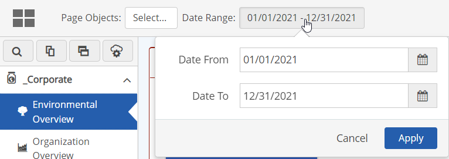
You can configure the page to allow users to pick a date range from pre-defined periods instead. When configured, users may use the drop-down list option or the custom date picker, or you may restrict them to picking from the list with the corresponding date range showing as read only.
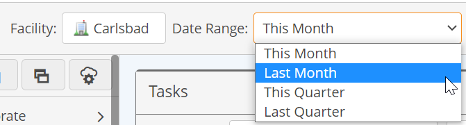
To use the date range options list, you will need to first create the list of options you want to make available.
To configure the page date range picker:
Click in the date field at the top of the page to open the Date Range settings window.
The initial default date period is the current month. You can add and configure the date ranges you want to use.
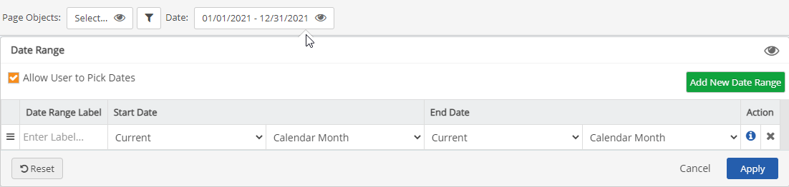
You must have at least two options in order to display the date period selector box on the page. If you want the page always to show only a pre-selected date range, you can configure the single default option as you like (for example, set the default display for Current Week instead of Current Month).
Allow User to Pick Dates: Unchecking this box will disable selection of custom dates. If options are configured for the date range options list, the user will be able to pick from that list only, and the dates covered by the period will be displayed as read-only. If there is only one option for the option list, the user will not see the date period selector box and will see only the pre-configured date range displayed as read-only.
Enter a Label for the first option. Then choose the relative periods you want to use for the Start Date and End Date. (See options below.)
If you want to use Current Month as one option, you can just enter a label (i.e., "This Month"). A label is not required if there is only a single date period.
Select Add New Date Range to add another option for the list.
Enter the label to display for the second option and choose the relative start and end periods.
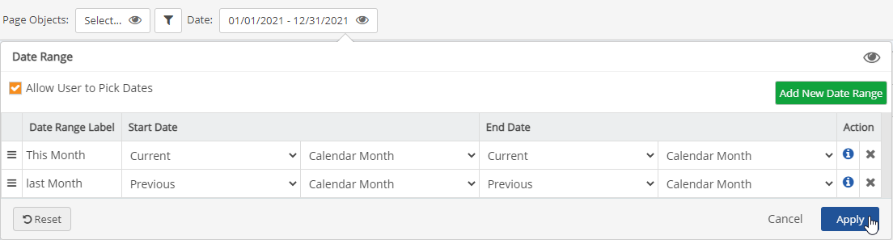
Click Add New Date Range again to add additional options. When you are done adding options, click Apply.
To remove an option, click the X in the last column.
Click Save to save the page.
The date period selector box will now be displayed and the date range periods will show in the list box.
Start Date options are:
The time will be always be 12:00 AM on the specified date or the first day of the period.
End Date options are:
End time will always be 11:59 PM on the specified date or the last day of the period.
At the top of the page:
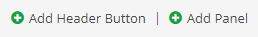
Add Header Button: Add a button to link to the "create new item" page in another App. See Add Header Button to Create New Item.
Add Panel: Add a panel to the page. For panel options, see Add/Edit Panels.
At the bottom of the page:
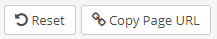
Reset: Remove current page changes without saving.
Copy Page URL: Copy the page URL to your clipboard to use to construct a URL link to the page.
The page object selection defines the objects that will be available to the page. The page object filter applies to all the panels on the page. Further filters may be applied at the panel level with the panel object selector. Objects may only be selected at the panel level that are within the scope of the page (except for panels with the setting Ignore Page Filters set as active).
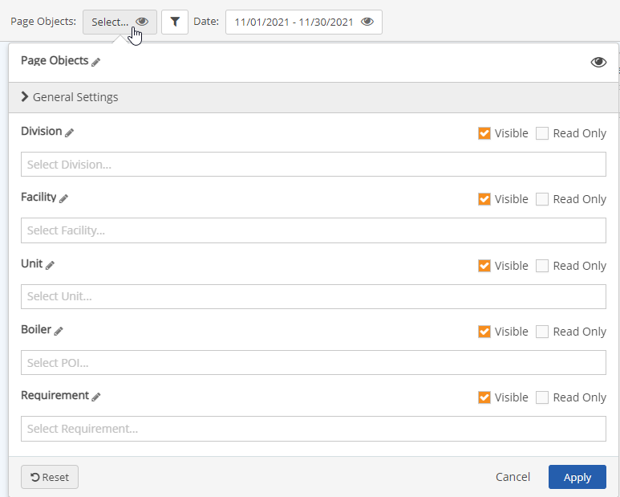
Filters are on object name only. Some examples:
Example 1: Division="Alaska", Facility="Manufacturing", Unit=empty, POI="Widgets"
Results available for panels=All objects under Alaska/Manufacturing/[Any Unit]/Widgets
Example 2: Division=empty, Facility="Manufacturing", Unit=empty, POI="Widgets"
Results available for panels=All objects under [Any Division]/Manufacturing/[Any Unit]/Widgets/
Users permissions also determine what objects are available to them.
Objects displayed in a panel follow these rules:
The initial section defines how the object selector will work on the page. Click on the carat next to General Settings to view all options.
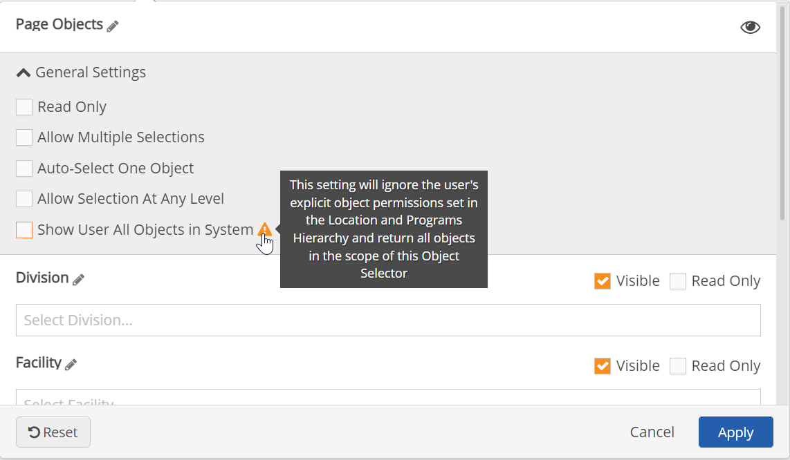
Visible: The eyeball icon indicates whether the page object selector will be visible. If visibility is disabled, the object selector will not be displayed on the page (and the filter will not be editable). If visibility is enabled, object types will be displayed either in read-only or edit mode depending on the settings for individual object types.
When the page will contain Numeric Data panels intended to allow users to work offline, the page object selector must be visible. Otherwise the Access Offline button will not be enabled. In addition, at least one object type must not be read-only. Users are required to make at least one selection in the page object filter in order to download data. This restraint is necessary to prevent excessively large downloads.
Selector Label ("Page Objects"): Click the editing pencil next to "Page Objects" (the default label) to edit the label for the object selector, so that the wording is relevant to what users will be viewing or searching for. For example, if only the Facility level is visible you can use the label "Facility"; if they will be entering data for certain types of equipment you can use the equipment name (i.e., "Boilers").
Read Only: If the Page Object selector is visible and read only, users will see the names of objects selected for the page (where objects are "visible"), but cannot edit them.
Allow Multiple Selections: If this value is false, the control will limit the user to one selection per level. If true, users can select multiple objects at any visible level that is not read only. This property works in conjunction with the Allow Multiple property on a panel, which controls the behavior of the object selector on the panel, if visible. Users may only select objects at the panel level that are within the scope of the page.
Auto-Select One Object: Requires one object to be selected for the page (forcing a filter to be invoked). By default, the first object in the list will be selected.
Allow Selection at Any Level: If true, users may select an object without being required to choose parent objects first. For example, they can select a POI without being required to select Division, Facility or Unit first. This must be enabled in order to select lower level objects when parent objects are read only or not visible.
Show User All Objects in System: If true, user may select any object in the system, regardless of their Management System object permissions. Access to view or edit data will vary by the permission requirements of the panel's data type (Numeric, Workflow, Event, or Task).
Show User All Objects in System setting is only available to users who are in the Administrators group and members of the app role Portal Administrators.
Object Type Selection: For each object type (Division, Facility, Unit, POI) you can set the following properties:
Label: Click the editing pencil next to the object type to edit the label for the object type, so that the wording is relevant to what users will be viewing. For example, if the POIs represent Outfalls, you can change the name "POI" to "Outfalls."
Filter by Object Name: The page filter will search for objects matching the selected name, taking into account the user's object permissions.
Visible: Specifies if the object name will be displayed in the object selector.
Read Only: Specifies if the user can view the object filter at this level. If Read Only is false, Visibility must be true in order to allow editing.
Object Property Filter: You can add optional filtering of the object type by property values (native or custom fields).
To create a property filter:
Select the filter button.
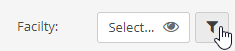
Select an operator and a value.
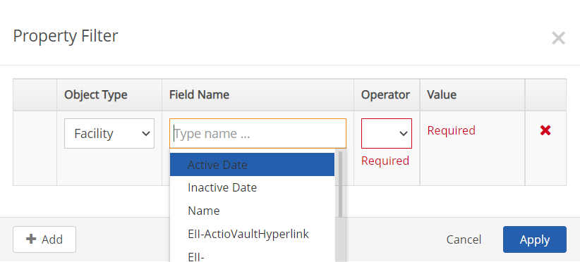
After configuring the page, click Save to save your changes.